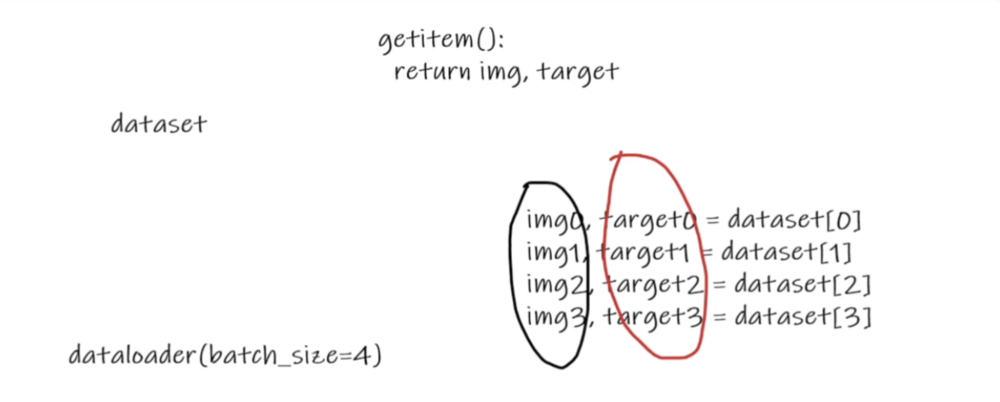

pytorch学习4
DataLoader
dataLoader意如其名，就是（从dataset）加载数据集

import torchvision
from torch.utils.data import DataLoader
# 测试集
test_data = torchvision.datasets.CIFAR10("./dataset",train=False,transform=torchvision.transforms.ToTensor(),download=True)
test_loader = DataLoader(dataset=test_data,batch_size=4,shuffle=True,num_workers=0,drop_last=False)
# 第一张样本
img,target = test_data[0]
print(img.shape)
print(target)
# 可以看看样本
for data in test_loader:
imgs,targets =data
print(imgs.shape)
print(targets) 可以使用SummaryWriter 来展示之：
import torchvision
from torch.utils.data import DataLoader
from torch.utils.tensorboard import SummaryWriter
# 测试集
test_data = torchvision.datasets.CIFAR10("./dataset",train=False,transform=torchvision.transforms.ToTensor(),download=True)
test_loader = DataLoader(dataset=test_data,batch_size=4,shuffle=True,num_workers=0,drop_last=False)
# 第一张样本
img,target = test_data[0]
print(img.shape)
print(target)
step = 0
writer = SummaryWriter("dataLoader")
for data in test_loader:
imgs,targets =data
# print(imgs.shape)
# print(targets)
writer.add_images("test_data",imgs,step)
step = step + 1
writer.close()
tensorboard logdir="dataLoader"全体目光向我看齐，我宣布个事！是我Charliechen写的这篇文章！(?)